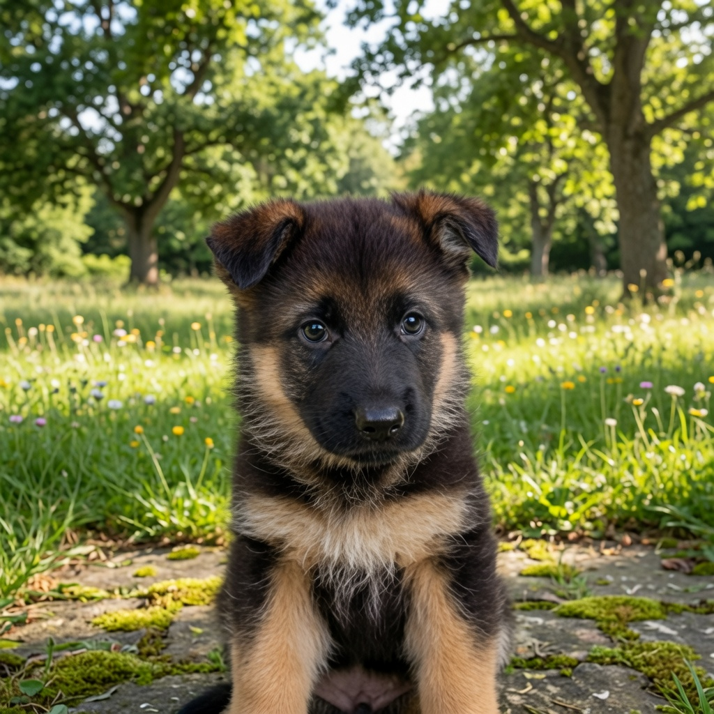
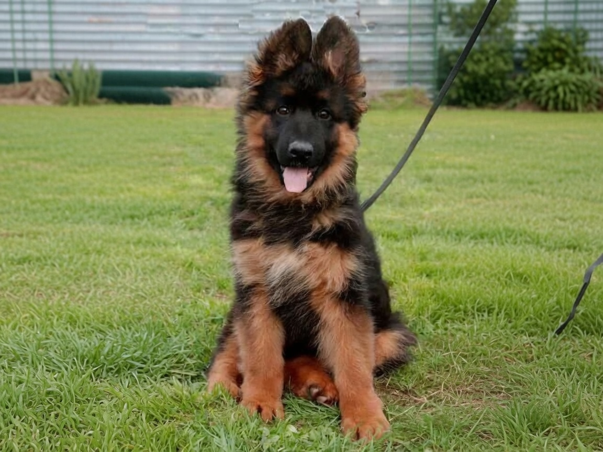
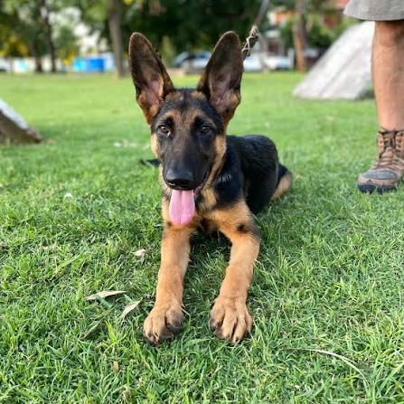
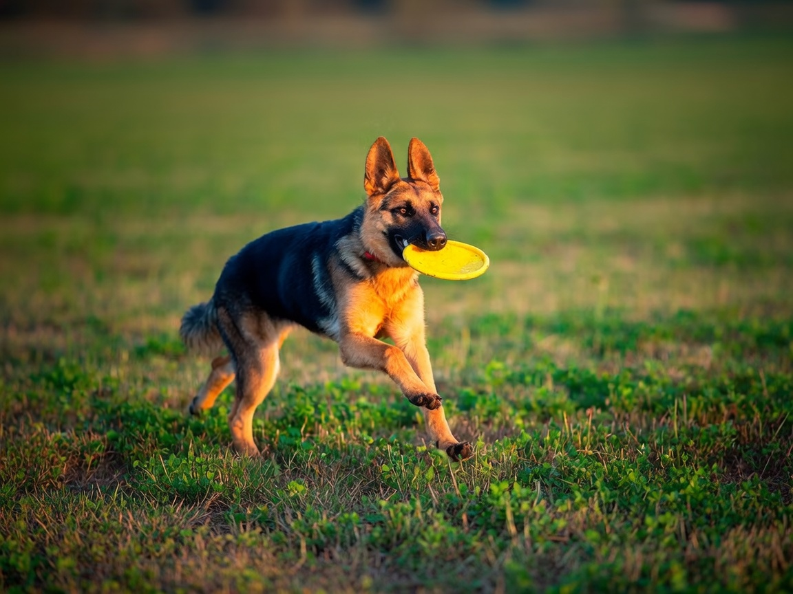
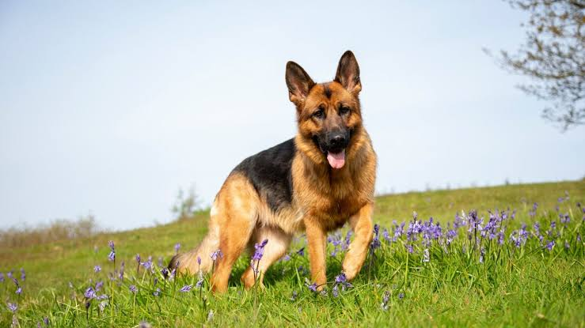
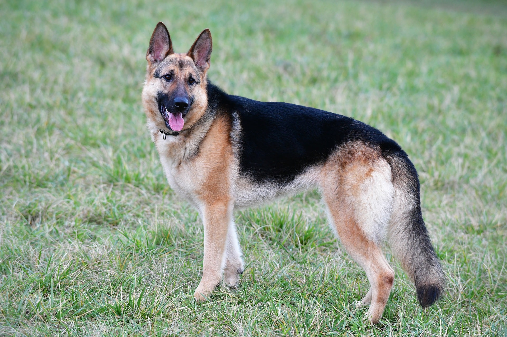
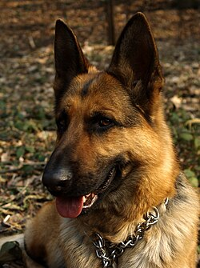
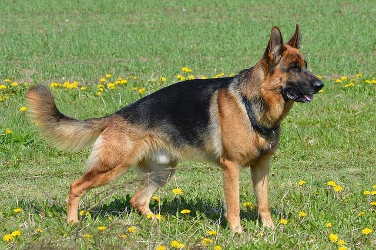
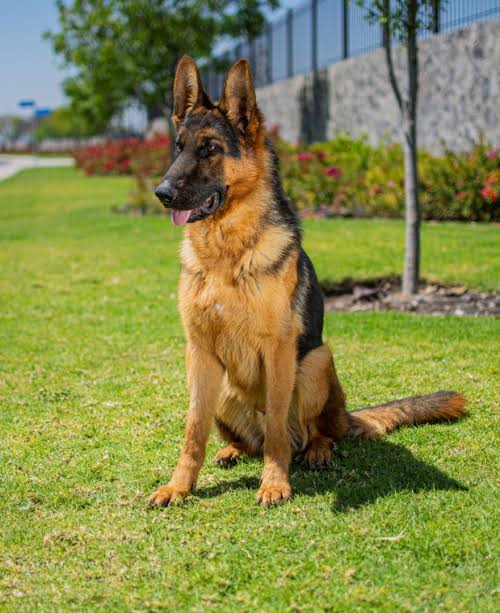

Ficha de Mi Mascota

¡Hola! Soy Duke
Edad: 4 años · Raza: Ovejero Alemán
Soy un perro muy protector, inteligente y cariñoso.
Conóceme mejor
🎾 Mi personalidad
Soy muy enérgico, atento y me llevo bien con todos.
- Leal: Cuido a mi familia.
- Inteligente: Aprendo rápido.
- Protector: Siempre estoy pendiente.
❤️ Cosas que AMO
- Jugar a la pelota
- Salir a correr
- Bañarme en la piscina
❌ Cosas que NO soporto
- La aspiradora
- Las tormentas
- Que me dejen solo
📋 ¿Quieres saber más sobre Duke?
Un poco más sobre mí
Duke llegó a nuestra familia cuando tenía 2 meses y desde entonces es parte de todo.
📸 Galería de fotos









💉 Historial médico
| Peso | 30 kg |
| Vacunas | Al día |
| Fractura | Tuvo una fractura de la pata delantera izquierda, tratada con inmovilización y rehabilitación. Fecha: Febrero de 2022 |
| Enfermedad leve | Tuvo una infección de oído leve que se trató con antibióticos. Fecha: Octubre de 2022 |
📍 Ubicación
🦴 Cuidados de Duke
Duke necesita ejercicio diario, alimentación balanceada y visitas periódicas al veterinario para mantenerse saludable.
También disfruta mucho de los paseos al aire libre y de los juegos con pelota en el parque.
- Salir a caminar.
- Jugar con la pelota.
- Descansar y dormir.